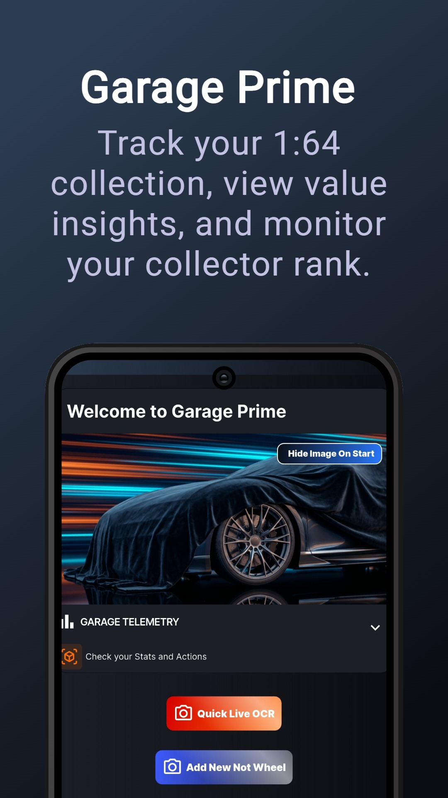

The Next Generation of Collecting
THE 1:64
COLLECTOR APP.
DIE 1:64
SAMMLER APP.
Built by a collector, for collectors. The ultimate AI-powered app to scan Carded, Loose, or Real 1:1 Cars and organize your die-cast garage in seconds.


